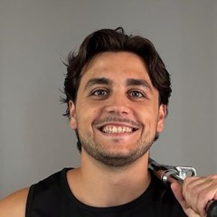
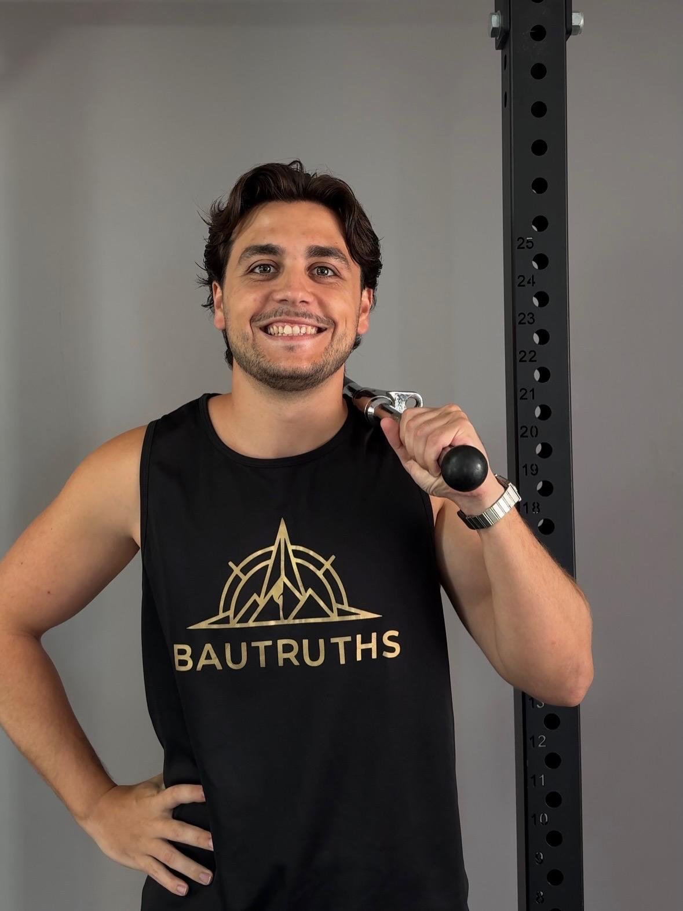
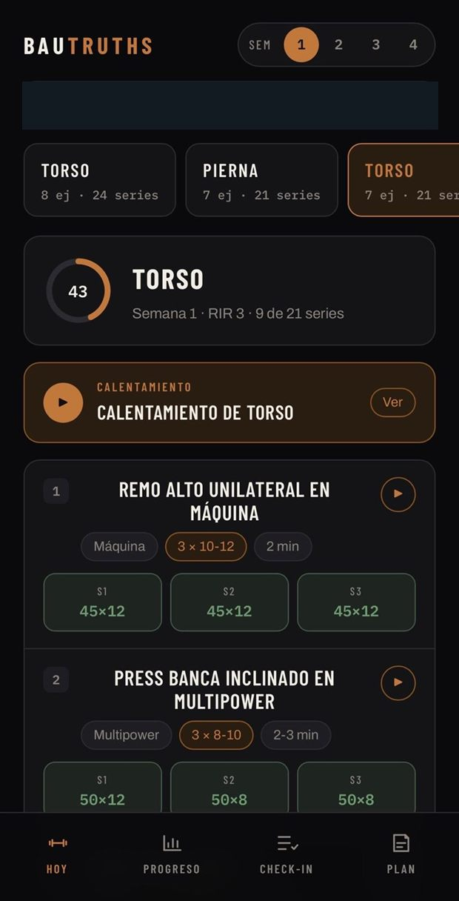
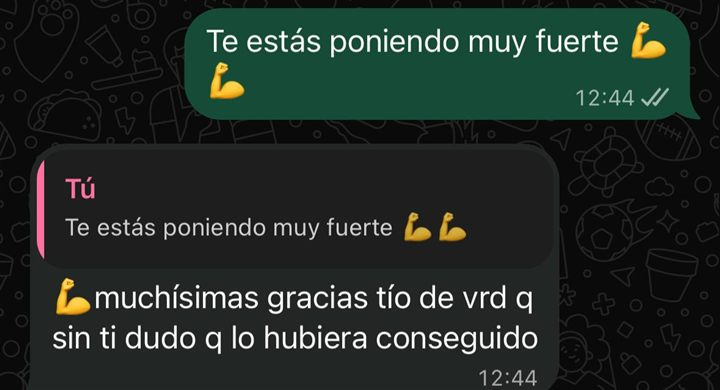
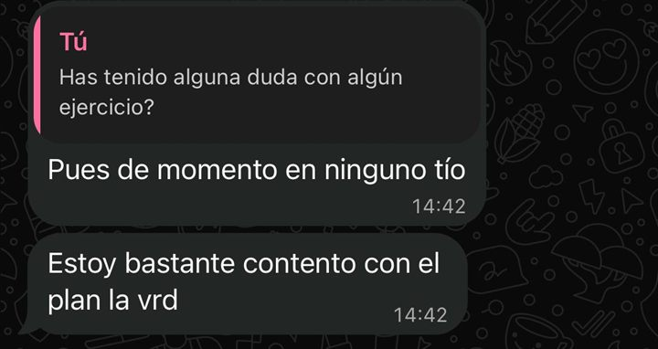
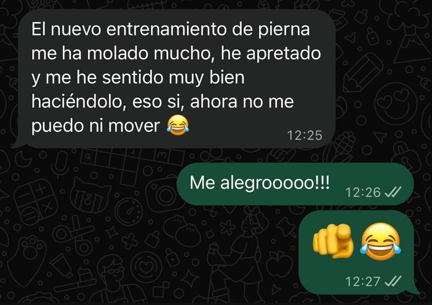
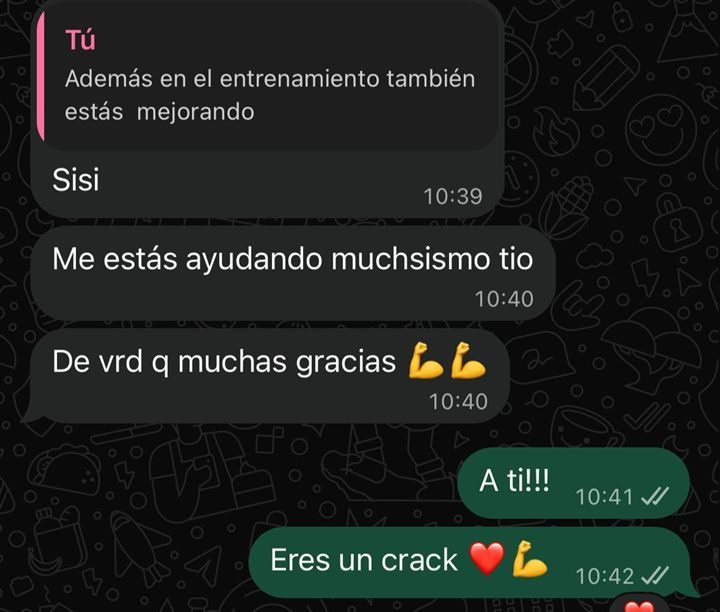
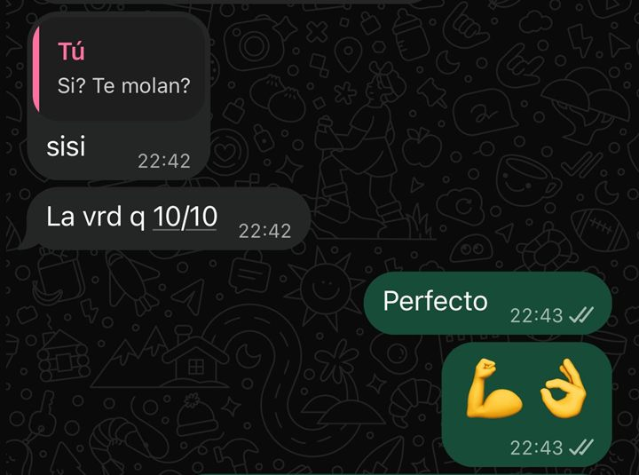
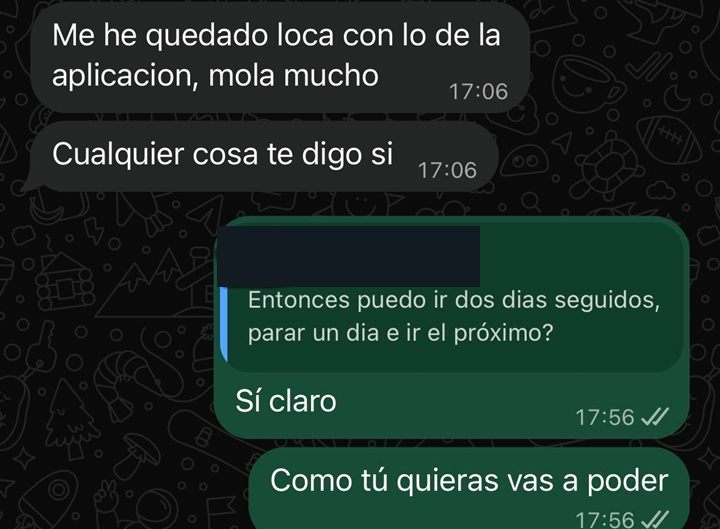

BAUTRUTHS
Entrenador onlineEntrena la mitad.Consigue el doble.
Músculo con evidencia, para gente sin tiempo. Entreno online, uno a uno, entrenes donde entrenes.
Sin vivir en el gimnasio · Sin rutinas copiadas · Sin entrenar a ciegas
↓ Toca para elegir
Qué buscas marca las que quieras
Tiempo a la semana
Se abre tu WhatsApp con el mensaje ya escrito. Solo dale a enviar.
de éxito
en tu plan
propio
Qué pasa cuando me escribes
-
01
Le das a enviar
El mensaje va escrito con lo que has marcado arriba. No tienes que redactar nada.
-
02
Te contesto yo
No un bot ni un comercial. Miro tu caso y te digo qué haría en tu situación, entrenes conmigo o no.
-
03
Decides tú
Si encajamos, montamos tu plan y empiezas. Si no, te quedas con la respuesta igual. Sin insistir.
Quién te va a contestar

Me llamo Samuel Rodríguez Baudru. Soy graduado en Ciencias de la Actividad Física y el Deporte, y entreno online a gente que no vive en el gimnasio.
Del deporte siempre me ha enganchado una cosa por encima de todas: ver cómo alguien mejora poco a poco. No el día que levanta mucho, sino las semanas que hay detrás.
Empecé readaptando lesiones y preparando atletas — tenis, fútbol, pádel, deportes de contacto. De ahí pasé al entrenamiento personal y me quedé, porque cambiarle a alguien la salud y la actitud engancha más que cualquier marca.
Lo que no soporto del sector es la cantidad de rutinas que se hacen «porque funcionan», sin que nadie sepa explicar por qué. Todo tiene una explicación y yo soy de los que necesitan encontrarla. De ahí viene lo de músculo con evidencia: no es un eslogan, es que no sé trabajar de otra manera.
Cuando escribas, te contesto yo. No hay nadie más.
Qué incluye entrenar conmigo
- Tu plan, hecho a manoLo monto yo mirando tu objetivo, tu nivel y los días que puedes de verdad. No sale de ninguna plantilla.
- Progresión e intensidad marcadasCargas y repeticiones planificadas semana a semana, y el RIR de cada serie: sabes cuánto apretar sin quedarte corto ni pasarte.
- Cada ejercicio con mi vídeoNo uno genérico de internet: el mío, explicando cómo se hace y los fallos que comete casi todo el mundo.
- Tu app en el móvilEl plan de la semana, los vídeos y el registro, en un solo sitio. Lo abres en el gimnasio y sabes exactamente qué toca.
- Yo reviso lo que registrasApuntas tus series y miro si la progresión avanza. Si se atasca, cambio el plan. Ese es el trabajo.
- WhatsApp directo conmigoMe escribes a mí. No a un ayudante, no a un bot, no a un formulario.

Esto va contigo si
- Tienes trabajo y tienes vida, y el gimnasio es lo primero que cae cuando la semana se complica.
- No quieres vivir en el gimnasio. Quieres entrenar bien y punto.
- Tu rutina la sacaste de alguien del gym, de un vídeo o de una IA.
- No sabes si estás progresando o simplemente estás estancado.
- No tienes ni idea de hacer los ejercicios ni de por dónde empezar.
No trabajo con todo el mundo
Si buscas perder diez kilos en un mes o un PDF genérico, no soy tu entrenador. Si quieres construir músculo con cabeza, entrenando menos horas de las que crees, encajamos.
Lo que me preguntáis siempre
No tengo tiempo
Es justo la gente con la que trabajo. El plan se hace sobre los días que tienes de verdad, no sobre los que te gustaría tener. Con dos o tres sesiones bien planteadas se avanza; con cinco mal aprovechadas, no. De ahí viene lo de entrenar la mitad.
¿Dónde entreno? ¿Tengo que ir a tu gimnasio?
No. Entrenas en el gimnasio que ya tengas, o en el que te pille cerca. Yo trabajo 100% online: te monto el plan según las máquinas que tengas disponibles, lo llevas en la app con los vídeos, y hablamos por WhatsApp. Vivas donde vivas.
No sé hacer bien los ejercicios
Cada ejercicio de tu plan lleva mi vídeo explicándolo, con los fallos típicos avisados antes de que los cometas. Y si dudas de algo, me grabas la serie y te digo qué corregir. Nadie empieza sabiendo.
Me da miedo que no estés pendiente de mí
Por eso registras tus series: no es burocracia, es lo que yo miro cada semana. Si algo lleva dos semanas sin moverse, lo veo antes que tú. Y me escribes directamente a mí por WhatsApp, no a un equipo de soporte.
¿Voy a pasarlo mal?
No. Ni sufrir en cada ejercicio, ni dos horas de gimnasio, ni salir arrastrándote de cada sesión. El RIR existe justo para eso: para que sepas cuánto apretar sin destrozarte. Si odias el proceso lo dejas en tres semanas, y entonces no sirve de nada.
Lo que me dicen
Mensajes de clientes, tal cual me llegan. Sin nombres, por respeto a ellos.






→ Desliza para ver más
Un mensaje ahora te ahorra meses entrenando a ciegas.
ESCRÍBEME POR WHATSAPPSin pagar nada · sin compromiso